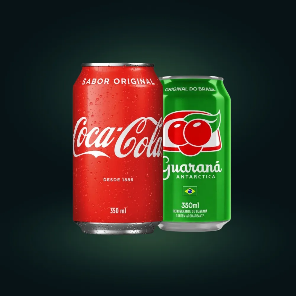
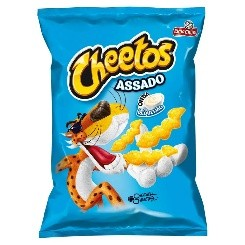
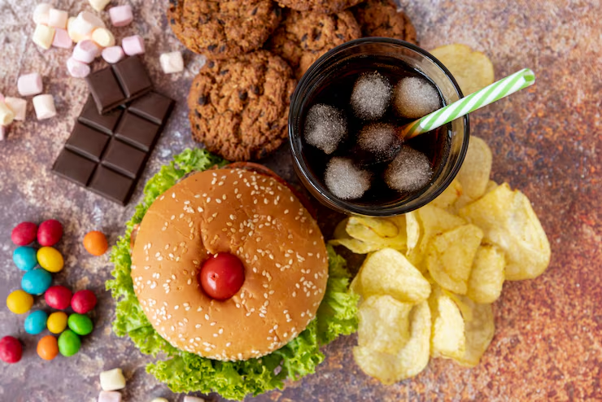

Conhecendo os alimentos: do natural aos industralizados
Alimentos ultraprocessados são formulações industriais feitas inteiramente ou majoritariamente de substâncias extraídas de alimentos (óleos, gorduras, açúcar, amido, proteínas), derivados de constituintes de alimentos ou sintetizadas em laboratório (corantes, aromatizantes, realçadores de sabor). Refrigerantes, salgadinhos de pacote, macarrão instantâneo, biscoitos recheados e bolos industrializados. Os ingredientes que podem ser encontrados são: Corantes Artificiais, Adoçantes Artificiais, Aromatizantes e Intensificadores de Sabores Sintéticos e Conservantes Sintéticos. doces, balas, cereais, refrigerante, misturas de bolo e sucos artificiais. Causam danos à saúde por serem nutricionalmente


